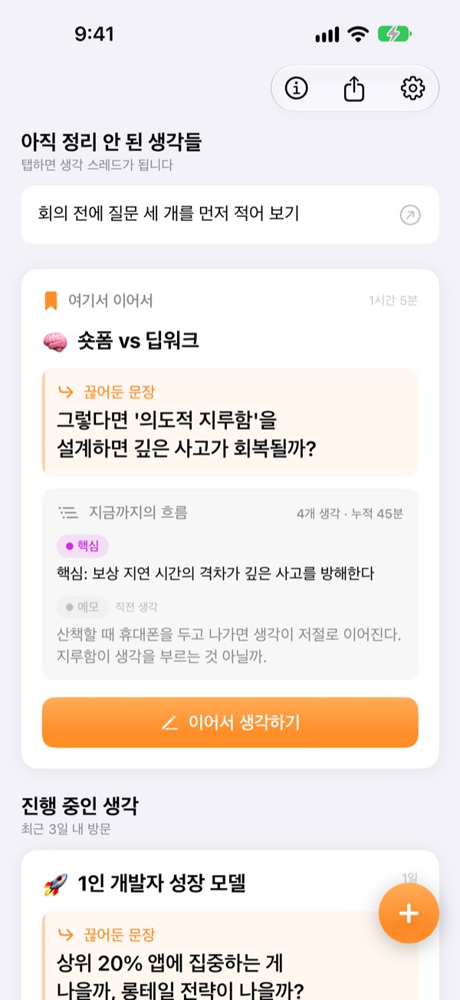
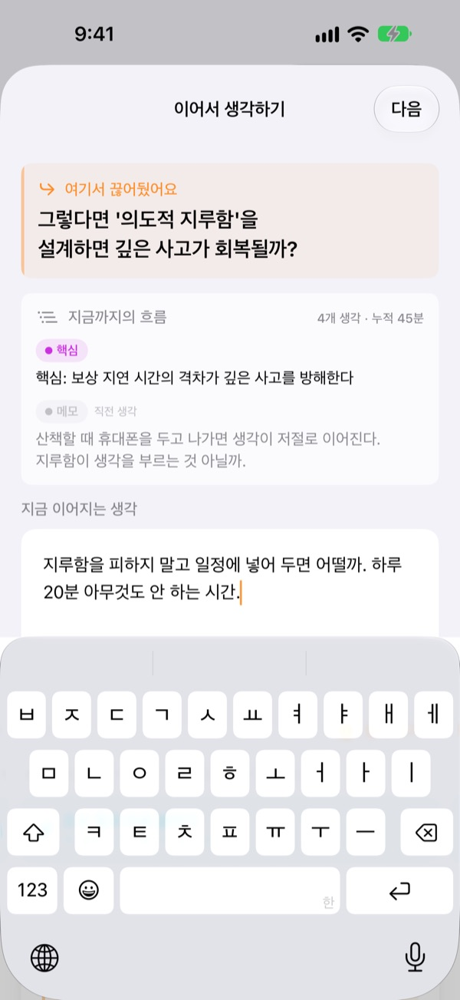
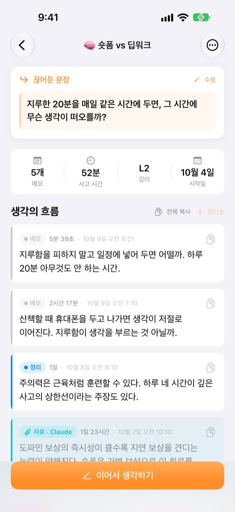
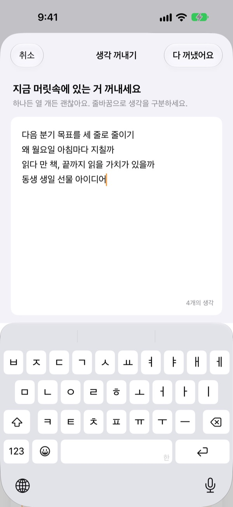

어제 하다 만 생각,
오늘 그 자리에서
생각을 멈출 때 이어 갈 문장 한 줄을 끊어 두세요. 다음에 열면 그 문장이 맨 위에서 기다리고 있어요.
모든 기능이 무료예요. 계정 없이 기기 안에만 저장돼요.

직접 끊어 보세요
생각을 한 줄 적고, 다음에 이어 갈 문장을 남겨 보세요. 앱과 같은 순서로 움직여요.
어디까지 생각했더라?
며칠 전 메모를 다시 열면 결론 몇 줄만 남아 있고, 그다음에 무엇을 고민하려 했는지는 사라져 있어요. 결국 처음부터 다시 생각하게 되죠. 이어생각은 멈출 때 다음 질문을 남겨 두게 해서, 다시 열자마자 그 질문에서 시작하게 해요.
끊어둔 문장이 맨 위에서 기다려요
생각을 마칠 때 다음에 이어 갈 질문 한 줄을 남겨요. 다음에 열면 그 문장과 지금까지의 핵심, 직전 생각이 한 카드에 모여 있어서 어디까지 했는지 떠올릴 필요가 없어요.
홈 화면 위젯에도 끊어둔 문장이 보이고, 생각하는 동안에는 잠금 화면과 다이내믹 아일랜드에 시간이 표시돼요.

메모가 핵심이 되기까지
적어 둔 생각을 메모, 정리, 핵심, 요약 네 단계로 올려요. 생각이 얼마나 무르익었는지 한눈에 보여요.
검색하거나 물어본 내용은 자료로 붙여 두니 내 생각과 섞이지 않아요.

머릿속부터 비워요
떠오르는 걸 한 줄씩 다 적은 다음, 지금 하나만 고르면 그게 생각 스레드가 돼요. 나머지는 홈에 보관됐다가 탭 한 번이면 이어 갈 생각이 돼요.
사흘 넘게 손대지 않은 생각은 되살릴 생각으로 따로 모여요.

시작은 세 단계면 돼요
- 1
생각을 꺼내요
떠오른 걸 한 줄씩 적고, 키울 생각 하나를 골라요.
- 2
이어서 생각해요
생각이 바뀔 때마다 따로 추가하면 나중에 다듬기 쉬워요.
- 3
문장을 끊어 두고 닫아요
다음에 열면 그 문장에서 바로 시작해요.
정리 단계
- 메모
- 날것의 생각
- 정리
- 한 번 정리함
- 핵심
- 핵심만 추림
- 요약
- 최종 요약
생각 옆의 단계 배지를 누르면 바꿀 수 있어요. 핵심과 요약은 다음에 열 때 카드에 먼저 보여요.
끊어둔 문장이 맨 위에서 기다려요
내 생각은 어디에 저장되나요?
모든 생각은 내 기기 안에만 저장돼요. 서버로 보내지 않고, 개발자도 볼 수 없어요. 기기 밖으로 나가는 건 설정의 피드백 보내기로 직접 보낸 내용뿐이에요. 자세한 내용은 개인정보처리방침에 있어요.
데이터를 백업하거나 다른 곳에 옮길 수 있나요?
홈 화면 오른쪽 위 내보내기 메뉴에서 모든 생각을 마크다운이나 JSON 파일로 내보낼 수 있어요. 파일 앱, 메모, 메일 등으로 공유해 보관하세요.
앱을 삭제하면 데이터는 어떻게 되나요?
앱을 삭제하면 기기에 저장된 생각도 모두 함께 지워져요. 삭제하기 전에 내보내기로 백업해 두세요.
위젯이 업데이트되지 않아요.
위젯은 30분 안에 한 번씩 새로 고쳐지고, 앱에서 생각을 추가하면 바로 새로 고침을 요청해요. 표시가 오래됐다면 앱을 한 번 열어 주세요.
끊어둔 문장을 꼭 써야 하나요?
생각을 적었다면 네. 이어서 생각하기 화면은 이어질 문장을 남겨야 닫혀요. 아무것도 적지 않았다면 그냥 닫을 수 있어요. 막혔을 때가 아니라 아직 쓸 게 남았을 때 끊어 두는 게 요령이에요.
되살릴 생각은 무엇인가요?
사흘 넘게 열지 않은 생각은 홈의 되살릴 생각에 따로 모여요. 잊고 있던 생각을 다시 꺼내 끊어둔 문장에서 이어 가면 돼요.
버그를 알리거나 기능을 제안하고 싶어요.
앱 설정의 피드백 보내기로 바로 보내거나, 아래 메일 또는 GitHub(github.com/M1zz/ThinkFlow/issues)에 남겨 주세요. 어떤 이야기든 반가워요.
정말 다 무료인가요?
네, 모든 기능이 무료예요. 광고도 계정도 없어요. 설정의 개발자 응원하기는 원할 때만 하는 선택이고, 해도 기능은 똑같아요.
궁금한 점이나 의견은 leeo@kakao.com로 보내 주세요.